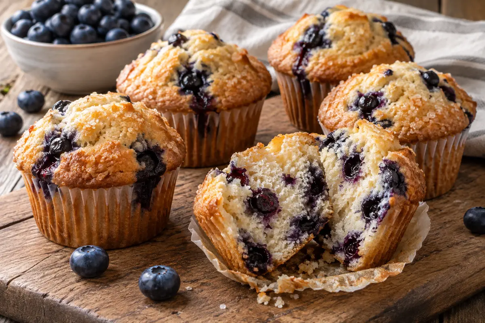

RECIPE COLLECTION
Breakfast
Easy morning favorites, from pancakes and toast to comforting baked starts.
22 recipes

Breakfast
Smashed Avocado Toast
Creamy avocado, crisp toast, chili flakes, and a bright squeeze of lemon.

Dessert
Greek Yogurt Berry Parfait
Layers of creamy yogurt, juicy berries, crunchy granola, and honey.

Breakfast
Fluffy Buttermilk Pancakes
Tall, tender buttermilk pancakes with crisp golden edges, butter, and maple syrup.

Breakfast
Classic Banana Banana Bread
Moist, tender banana bread packed with ripe banana flavor and a buttery brown-sugar crumb.

Breakfast
Biscuits and Gravy
Flaky warm biscuits smothered with creamy Southern-style pork sausage gravy seasoned with plenty of black pepper.

Breakfast
French Toast
Classic American French toast with crisp buttery edges and a soft vanilla-custard center, ready for maple syrup and fresh fruit.

Breakfast
Cinnamon French Toast
Warm cinnamon-spiced French toast with caramelized buttery edges and a tender custard center.

Breakfast
Breakfast Burritos
Crisp breakfast burritos packed with fluffy eggs, savory ham, cheese, and fresh tomato for a filling make-ahead breakfast.

Breakfast
Breakfast Casserole
A crowd-friendly American breakfast casserole layered with eggs, bacon, vegetables, and melted cheddar.

Breakfast
Sausage Breakfast Casserole
Sausage breakfast casserole with bread, eggs, milk, and cheddar baked until golden and set.

Breakfast
Eggs Benedict
Classic Eggs Benedict with toasted English muffins, Canadian bacon, poached eggs, and silky lemon hollandaise.

Breakfast
Hash Browns
Crispy skillet hash browns with deeply golden edges and tender shredded potato centers.

Breakfast
Home Fries
Diner-style home fries with crisp-edged potatoes, sweet onion, bell pepper, and savory breakfast seasoning.

Breakfast
Breakfast Tacos
Easy breakfast tacos filled with fluffy scrambled eggs, chorizo, cheese, avocado, and fresh salsa.

Dessert
Blueberry Muffins
Tall bakery-style blueberry muffins with tender vanilla crumb, juicy berries, and crisp sugared tops.

Dessert
Cinnamon Rolls
Soft, fluffy cinnamon rolls layered with brown sugar filling and finished with tangy cream cheese icing.

Breakfast
Bubble and Squeak
Crisp-edged mashed potato and cabbage cakes fried in butter until golden outside and soft within.

Breakfast
Full English Breakfast
A Full Monty fry-up with sausages, bacon, eggs, tomatoes, mushrooms, baked beans, black pudding, fried bread, toast, jam, and tea.

Breakfast
Kedgeree
Gently spiced rice with smoked haddock, peas, herbs, and boiled eggs for a classic Anglo-Indian breakfast dish.

Breakfast
Montreal Bagels
Hand-rolled, honey-boiled and seed-coated Montreal-style bagels.

Pork
Peameal Bacon Sandwich
A peameal bacon sandwich with tomato, iceberg, melted cheese and bomba mayonnaise.

Breakfast
Canadian Sausage Breakfast Casserole
Hash browns, sausage, vegetables, cheddar and eggs baked into a hearty breakfast casserole.